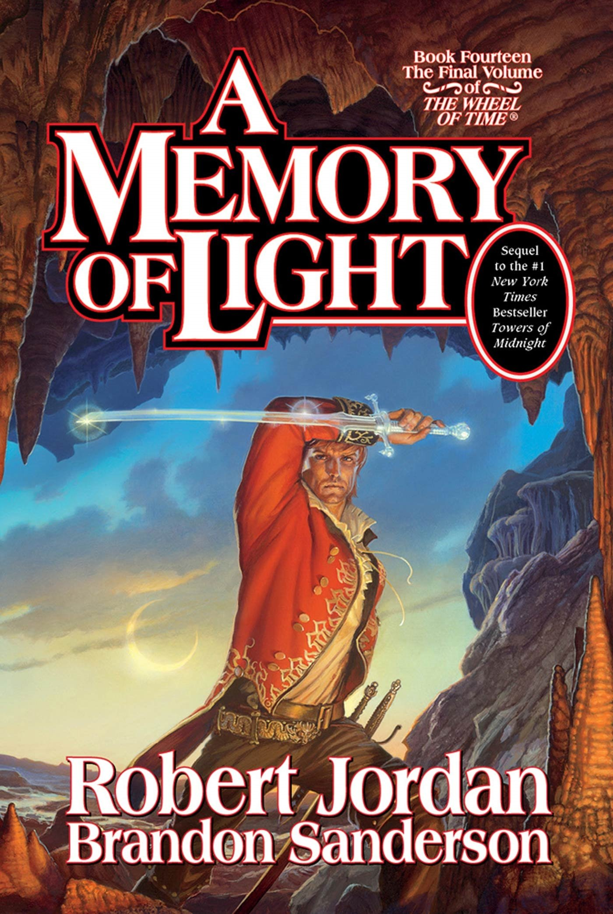

A Memory of Light
⭐️⭐️⭐️⭐️
Format: audio (41 hours 47 minutes)
My rating may be tainted by this being the last book in the series, and the bittersweet nature of such a thing, but probably not.
I understand that there was a lot to be done in this final book, but I wasn't particular fond of the approach. It felt like the scatter-shot story telling was rather disjointed, but I also admit I was pleased that so many different story lines were wrapped up in some way. Any author would have a difficult time in doing that.
I don't think this book would stand well on its own, and would avoid it if you haven't read any other books in the series.
I enjoyed the whole series, and am sad it has reached its end. At the same time, I'm glad I took the time to have the characters and plot lines play in my mind for so long. If you enjoy character and world development, no matter if you're a fan of fantasy or not, you would be hard pressed to find a much better series.
Tai'shar Malkier
- Previously: The Last Green Valley
- Next: Roots